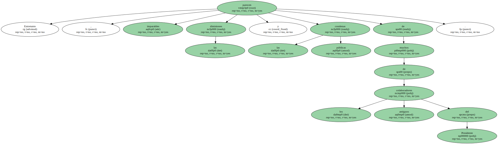
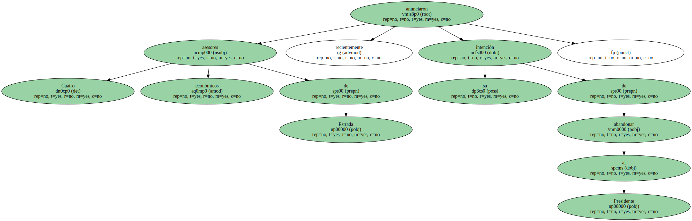
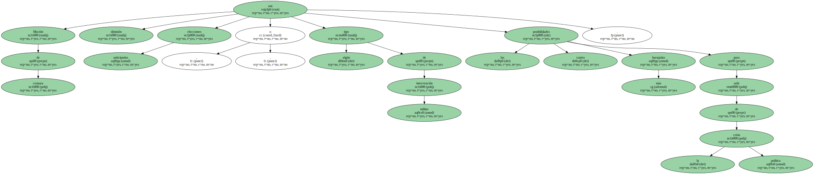

La Iglesia filipina instó hoy Sábado al presidente Joseph Estrada a " volver a la gracia de Dios " y renunciar a su cargo , durante la mayor de las concentraciones de protesta celebradas hasta ahora en Manila contra el jefe del Estado.
" La presidencia no es buena para usted porque no tiene capacidad para dirigir el país y la dimisión será buena para su alma " , afirmó el arzobispo de Manila , cardenal Jaime Sin.
Con banderas y pancartas en las que se pedía la dimisión de Estrada , unas 100.000 personas se concentraron hoy , convocadas por el cardenal Sin , en Edsa , la zona de la capital filipina donde las protestas populares precipitaron en 1986 la caída del dictador Ferdinan Marcos.

" Usted no estuvo aquí con nosotros en la revolución de Edsa " , afirmó la ex presidenta Corazón Aquino , que instó también a Estrada a presentar su dimisión inmediata por el bien de la economía y de la sociedad filipinas.
Aquino pidió a los miembros de las Fuerzas Armadas que reconozcan el derecho constitucional a manifestarse y no presten oídos " a aquellos que quieren utilizaros para sus propios fines ".
Acusado de recibir más de ocho millones de dólares procedentes del juego ilegal y de comisiones de una empresa tabacalera , Estrada reiteró el Lunes su inocencia en un mensaje televisado a la nación , que fue seguido por otros dos , inesperados , del Ejército y la Policía , en los que se comprometían a defender la Constitución.
El cardenal Sin , que dirigió el rezo del rosario antes de los discursos , pidió a Estrada que " no siga ni un día más " en la Presidencia , que se ha convertido para él en una " ocasión de pecado ".
La manifestación de hoy ha estado precedida en las últimas semanas por marchas similares , aunque ninguna de ella con la convocatoria del cardenal Sin y la presencia , entre otros , de Aquino , el también ex presidente Fidel Ramos y la vicepresidenta , Gloria Macapagal-Arroyo , que sustituiría a Estrada si éste deja el poder.
Entretanto , parecen imparables las dimisiones y las condenas públicas de muchos de los antiguos colaboradores del Presidente.
Varios senadores y congresistas habían presentado ya su dimisión , pero la de Macapagal-Arroyo , que renunció a su cargo de ministra de Bienestar Social el pasado 12 de Octubre , provocó una serie de deserciones en cadena.
Cuatro asesores económicos de Estrada anunciaron recientemente su intención de abandonar al Presidente.
Hace dos días , otro miembro del Gabinete , el titular de Comercio , Manuel Rojas , dejó su puesto , y ayer , viernes , los presidentes del Senado y del Congreso , Franklin Drilon y Manuel Villar , respectivamente , arrastraron en su renuncia a otros dos senadores y 45 congresistas.
Estas últimas dimisiones suponen el colapso de la coalición gubernamental , Lucha de las Masas Nacionalistas Filipinas ( LAMP ) , y aumentan las posibilidades de éxito del proceso para la presentación de una moción de censura iniciado el mes pasado por 54 legisladores.
Según la Constitución filipina , inspirada en la de Estados Unidos , el proceso para la presentación de la moción de censura debe iniciarse en la Cámara baja con el voto de al menos un tercio de los 218 diputados , para ser posteriormente aprobada por 15 de los 22 miembros del Senado.
Las dimisiones en el Senado elevan a once el número de opositores a Estrada , y en el Congreso suman ya 95 los diputados que estarían dispuestos a presentar una moción de censura.
Pero el proceso sería largo , entre uno y seis años , y las voces que se elevan cada vez con más fuerza en las calles y entre la oposición exigen una dimisión inmediata de Estrada , elegido presidente en 1998 por un periodo de seis años.
Moción de censura , dimisión , elecciones anticipadas o algún tipo de intervención militar son las cuatro posibilidades más barajadas para salir de la crisis política.
Mientras , la maltrecha economía filipina sigue su marcha descendente y la divisa nacional , el peso , supera ya la barrera psicológica de las 50 unidades frente al dólar.